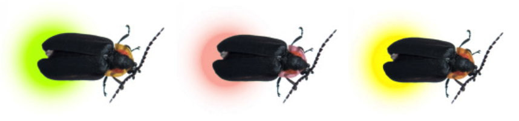

If possible, please collect data once a week. It is not necessary to make your observations at the same time every evening, but it is important to work from the same location: your habitat site.
Give your habitat a name:
Firefly Habitat Overview Observations
How many different firefly colors did you observe?

Firefly Habitat Overview Observations
How many different firefly flashing patterns did you observe?
Firefly Habitat Overview Observations
Where were the fireflies that you observed?
Firefly Habitat Overview Observations
During a 10-second period, how many fireflies did you observe?
Focused Firefly Reporting
If possible, choose three (or more) fireflies with different colors or flashing patterns. Observing them closely will help you differentiate between species and give you a greater appreciation of what is happening in your firefly habitat.
Firefly Observations:
New Firefly Observation
Take a photo of your firefly, then add the photo to this observation
New Firefly Observation
Tap your finger on the circle below to replicate the firefly's flash pattern